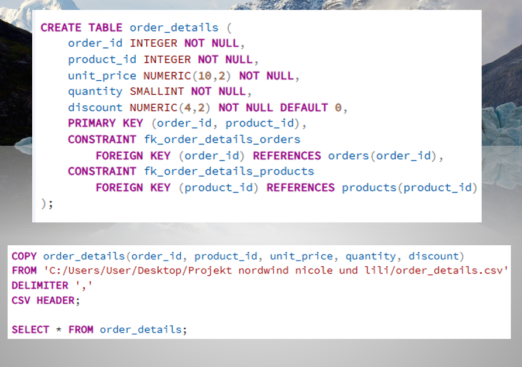
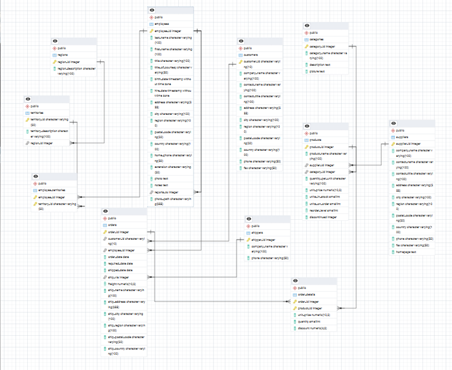

Projektbeschreibung
In diesem Projekt wurde die Northwind-Datenbank komplett neu aufgebaut. Die Tabellen wurden in PostgreSQL erstellt, mit Primary Keys und Foreign Keys verbunden und anschließend mit CSV-Dateien befüllt.
Projektbilder
Die folgenden Bilder zeigen Einblicke in unser Northwind-Projekt, die Datenbankstruktur und die Arbeit mit den Tabellen.


Erstellte Tabellen
- categories
- customers
- employees
- regions
- shippers
- suppliers
- territories
- products
- orders
- employee_territories
- order_details
Ziel der Analyse
Ziel war es, Verkaufsdaten, Lagerbestände, Kunden, Mitarbeiter, Produkte und Umsätze der fiktiven Firma Northwind Traders auszuwerten.
Beantwortete Fragen
- Welche Produkte wurden im erfassten Zeitraum verkauft?
- Welche Produkte waren am letzten Stand auf Lager?
- Welche sind die drei teuersten und drei günstigsten Produkte?
- Welche Produkte kosten über 21 Dollar?
- Welche Produkte kosten zwischen 5 und 15 Dollar?
- Welche Produkte kosten weniger als der Durchschnitt?
- Wie viele Produkte wurden verkauft und wie viele wurden eingestellt?
- Welcher Kunde hat bisher am meisten gekauft?
- In welchem Alter wurden die Mitarbeiter eingestellt?
- Bei welchen Artikeln überstiegen die Bestellzahlen den Vorrat?
- Welcher Verkäufer hat die meisten Geschäfte gemacht?
- Welcher Kunde hat die größte Menge eines Produkts bestellt?
- Welche Veränderungen gab es in den Jahren 1996, 1997 und 1998?
Verwendete SQL-Techniken
- CREATE TABLE
- Primary Keys und Foreign Keys
- COPY zum Importieren von CSV-Dateien
- SELECT-Abfragen
- JOINs zwischen mehreren Tabellen
- GROUP BY und ORDER BY
- Aggregatfunktionen wie SUM, AVG und COUNT
- Unterabfragen
- Views
- Funktionen
- Trigger
- Regex-Beispiel
Views
Es wurden Views erstellt, um wichtige Ergebnisse übersichtlich wiederverwenden zu können, zum Beispiel:
- Verkaufsmenge pro Produkt
- Bestellübersicht
- Bestellumsatz
Funktion und Trigger
Zusätzlich wurde eine Funktion erstellt, welche den Gesamtwert einer Bestellung berechnet. Außerdem wurde ein Trigger programmiert, der beim Einfügen neuer Bestellpositionen automatisch den Lagerbestand reduziert.
Fazit
Die Analyse zeigt wichtige Zusammenhänge zwischen Produkten, Verkäufen, Kunden, Mitarbeitern und Lagerbeständen. Besonders deutlich wurden Unterschiede zwischen günstigen und teuren Produkten, wichtige Kunden, erfolgreiche Verkäufer sowie mögliche Lagerprobleme.